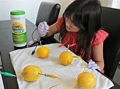

um experimento natural também é chamado de quase-experimento. Um experimento natural envolve fazer uma previsão ou formar uma hipótese e, em seguida, reunir dados por meio da observação de um sistema. As variáveis não são controladas em um experimento natural.
